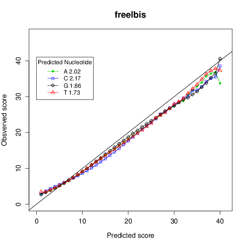

freeIbis
An efficient basecaller for Illumina sequencers with calibrated quality scores
About.
freeIbis is a basecaller for Illumina sequencers based on Support Vector Machines (SVM). This approach produces more accurate basecalls than the default Illumina basecaller. freeIbis can use the control sequences to calibrate the output of the SVM to produce directly calibrated quality scores. For instance, freeIbis can produce quality scores that correlate highly with observed ones: 
Citing
The paper describing our algorithm was published in bioinformatics:
Gabriel Renaud, Martin Kircher, Udo Stenzel, and Janet Kelso freeIbis: an efficient basecaller with calibrated quality scores for Illumina sequencers Bioinformatics (2013) 29 (9): 1208-1209 first published online March 6, 2013 doi:10.1093/bioinformatics/btt117
Contact
Please contact Gabriel Renaud (@grenaud) for further information: